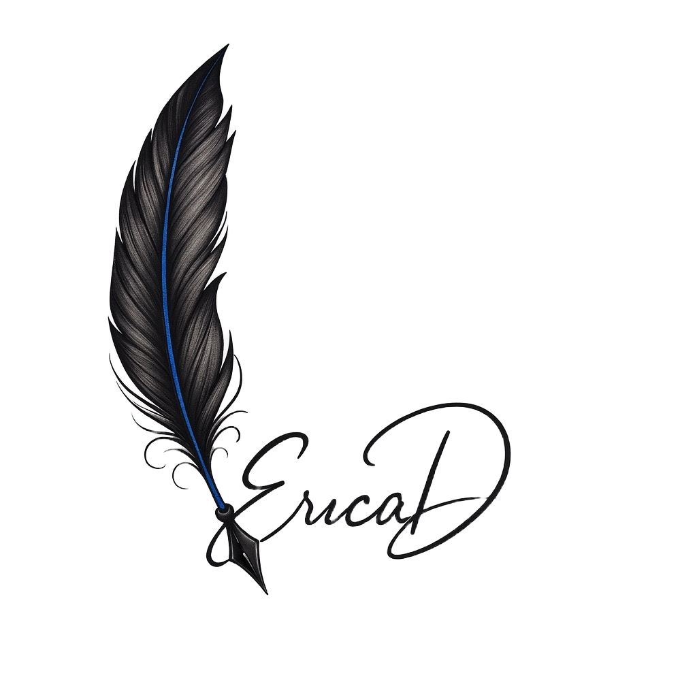
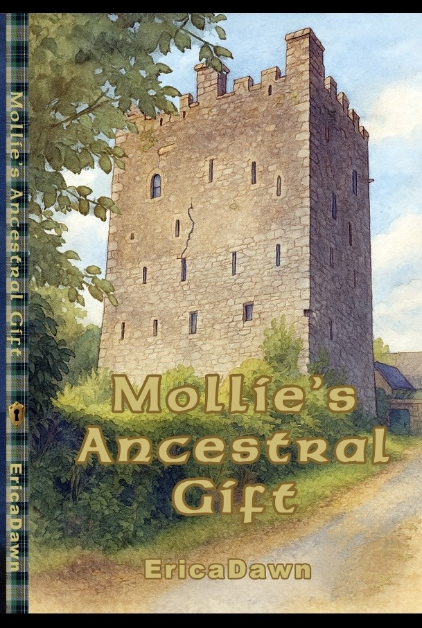
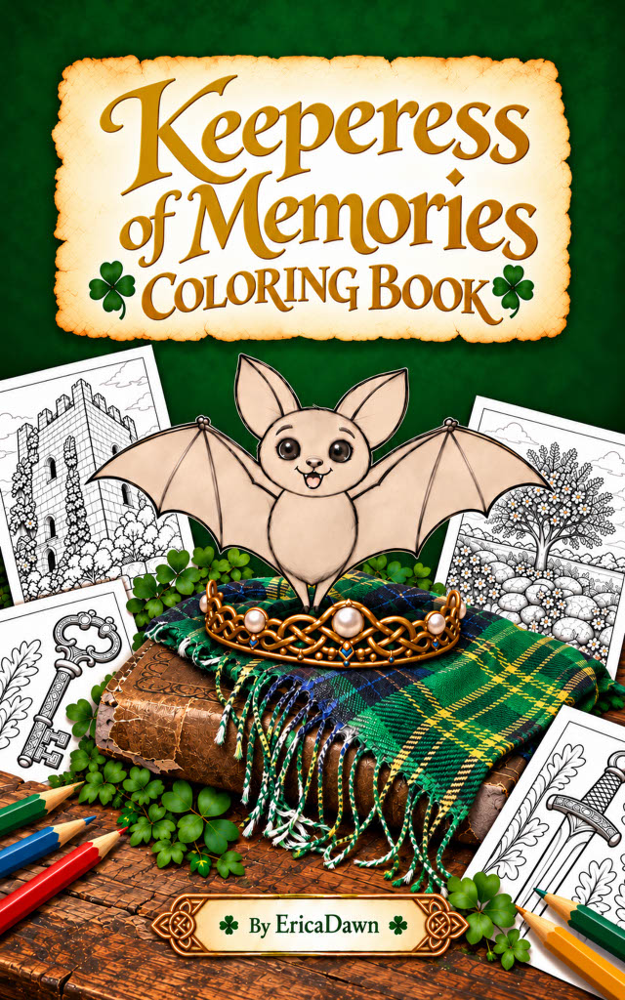
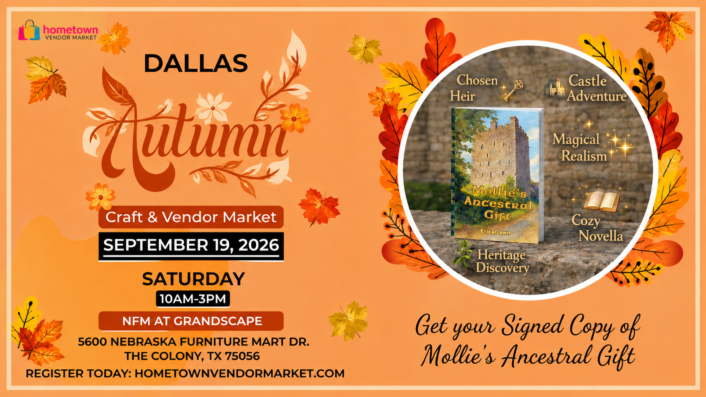
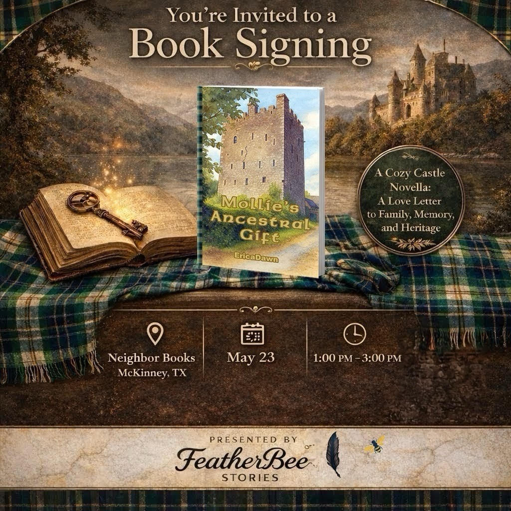

Keeperess of Memories Collection

Book 1
Mollie’s Ancestral Gift
Mollie’s Ancestral Gift is a gentle folklore fantasy rooted in magical realism, serving as a love letter to heritage. Guided by Aunt Grace, Mollie discovers through whispered memories, ancestral echoes, and the quiet magic of a lakeside castle, that her family’s legacy lives within her. Destined to become Keeperess of family memories, she must honor the past while carrying its wisdom forward.
View on Amazon
Book 2 · Coloring Book
Keeperess of Memories Coloring Book
Bring the world of Mollie's Ancestral Gift to life with this coloring book inspired by the magic, heritage, and folklore of the Keeperess of Memories series. Explore the story through creativity and color, and make each page your own.
Events & Book Signings:

